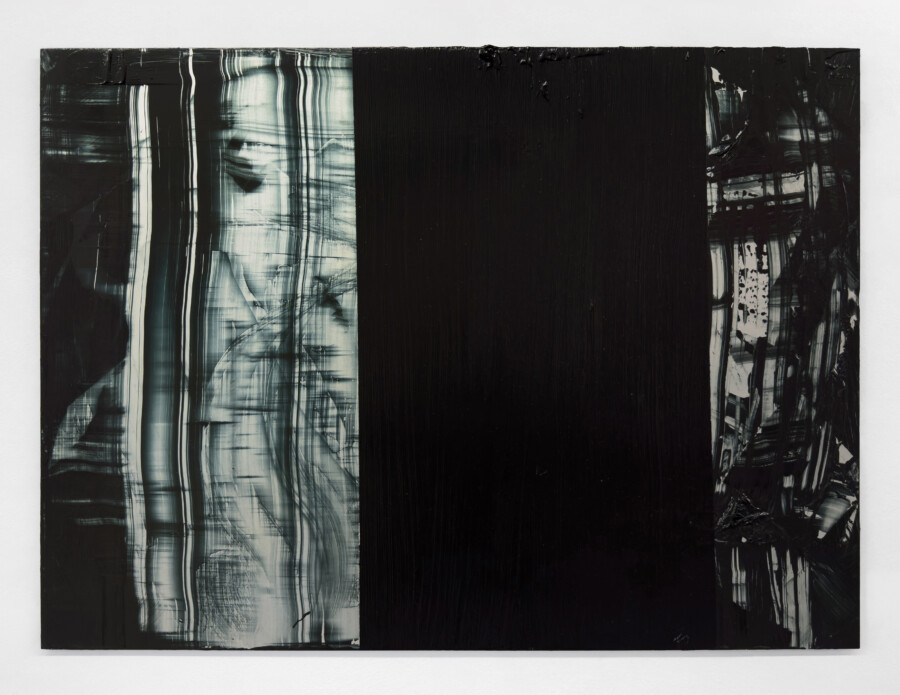

Matthew Herriot: Surface Veil
Abstraction, to Matthew Herriot, is about seeing clearly. In Surface Veil, Herriot utilizes subtly textured black paint on reflective aluminum, reconfiguring painting from static images into perceptual systems in which time, light, and attention function as coextensive materials.
Herriot paints using a structured method of scraping and dragging acrylic across anodized aluminum surfaces, a process defined by manual inaccuracies—the uneven drag of the scraping tool, subtle shifts in pressure, and the inconsistent behavior of paint shaped by its viscosity and drying time. These imperfections are not so much the result of conscious decisions as the visible presence of human error and material failure, both of which prove generative: small deviations in Herriot’s procedure lead to unanticipated results.
Yet the Surface Veil works do not depend entirely on mechanical accident. The imposition of a black rectangle is a deliberate compositional choice—operating either as interruption, obstruction, focal point, or stabilizing counterweight. The black rectangle further produces an interplay between material opacity and optical space. In certain light, its brushed texture is revealed, pulling it in front of the remainder of the painting as an opaque surface layer. In other light, its texture visually dissolves, causing it to recede into a dark void that optically extends far beyond the surface. Shifts in illumination and viewing angle therefore transform each painting’s spatial hierarchy, with the black rectangle and surrounding scraped passages repeatedly exchanging roles between figure and ground.
These spatial reversals position Surface Veil as a response to image-based perceptual habits in painting. Our initial reaction when looking at a painting is to scan and categorize it—for instance by comparing the work to a prominent art historical style or contemporary trend. Once this process concludes and the viewer recognizes the painting as familiar, perception closes. This tendency is intensified in the digital age by our fast-paced, superficial consumption of images online. In Surface Veil, Herriot aims to extend perceptual engagement beyond quick recognition or style categorization. Instead, the painting unfolds over time, as subtle shifts in lighting and viewpoint actively reorganize its form, preventing its reduction to a single image.
The site-specific lighting at boundary creates a curatorial pathway for the viewer to walk through and experience the works in their varied perceptual configurations. The precise installation makes real light an active protagonist in the work, advancing a phenomenological language of abstraction—one in which a painting exists only in dialogue with its surroundings and, most importantly, its audience.
Matthew Herriot (b.1999, London, UK) has a BA from Yale University (2022) and an MFA from the School of the Art Institute of Chicago (2025). Herriot’s work is in private collections located in Los Angeles, CA, San Francisco, CA, Chicago, IL, New York, NY, New Haven, CT, Boston, MA, London, UK, and La Môle, France. His recent exhibitions include, Echoes of Form, Mayfield, Chicago, IL; Hearth, Sarah Brook Gallery, Los Angeles, CA; Two-Person Teaching Exhibition with Henri Matisse, Yale University, New Haven, CT; and Newly Available, 72 Warren St, New York, NY. In 2023, he published the essay “Oasis of
Pure Feeling: For Abstract Art” in Curatorial Affairs. boundary is a contemporary art project space in a converted 420 square foot garage in the Morgan Park neighborhood of Chicago. As a project space, the mission is to provide opportunities for Chicago-based, national, and international artists to exhibit works in progress as well as completed bodies of work. For additional information or to schedule an appointment, please contact Susannah Papish at 773-316-0562 or email boundarychicago@gmail.com.